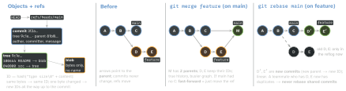

engineering · folio
In one line: Git is a content-addressed object store plus movable pointers. A commit is a full snapshot (a tree) with pointers to its parent(s); history is the resulting DAG; a branch is just a ref naming one commit. Merge adds a commit with two parents (history kept); rebase re-creates your commits on a new base (new IDs, linear history) — which is why rebasing commits others already have breaks their clones.
Download PDF Print view LaTeX source


How it works
- 4 object types: blob (content), tree (names + modes → blobs/trees), commit (tree + parents + author/committer + message), annotated tag. Stored zlib’d, later delta-packed; a commit is a snapshot, diffs are computed on demand. Default hash SHA-1 (SHA-256 repos exist).
- Refs: a branch is a file with a commit ID;
HEADnames the current branch (detached = a raw ID).origin/mainis a remote-tracking ref, moved only byfetch. The index is the next commit’s tree. - Fast-forward: target is an ancestor → move the ref, no commit (
--ff-onlyinsists,--no-ffforces a merge commit to keep the feature visible). - Squash merge: one new commit on main; the branch’s commits are not ancestors, so a branch continued after it conflicts with itself — delete it.
Conflicts
- A 3-way merge compares base (
git merge-base) with both sides; only lines both changed conflict.merge.conflictStyle = zdiff3also prints the base — resolve by intent. - In a rebase,
--ours= the branch you are rebasing onto,--theirs= your replayed commit — the reverse of a merge. - rerere (
rerere.enabled true) records each resolved hunk and re-applies it when the same conflict returns: repeated rebases, back-merging a release branch. - Escape hatches:
git merge --abort,git rebase --abort.
Example — git bisect with a run script
git bisect start
git bisect bad HEAD # broken now
git bisect good v5.11.0 # last known good tag
git bisect run ./repro.sh # ~log2(N) builds
git bisect reset # back to where you were
# repro.sh -- exit 0 good, 1..127 bad, 125 = skip
xcodebuild build-for-testing -scheme App -quiet || exit 125
xcodebuild test-without-building -scheme App \
-only-testing:AppTests/CartTests/testTotal || exit 11,000 commits → ∼10 steps. A build that fails for an unrelated reason must skip (125), not say “bad”. git bisect skip by hand; --first-parent walks only merges into main.
Recovery — the reflog
Every move of HEAD and each branch tip is logged locally: git reflog → git branch rescue HEAD@{3}. Survives a bad rebase, reset or deleted branch; entries expire (gc.reflogExpire 90 days, unreachable 30). Never pushed — another clone cannot help.
Remember
“Snapshots in a DAG, branches are pointers, rebase makes new commits — never under someone else.”
Branching strategies
| Model | Shape | Fits |
|---|---|---|
| trunk-based | branches live hours–2 days, merge to main daily; unfinished work behind flags | CI/CD, large teams |
| GitHub flow | main + PR branches, main always releasable | web, continuous deploy |
| GitFlow (2010) | develop, feature/*, release/*, hotfix/*, main = shipped | versioned products; its author (2020) points CD teams to simpler flows |
| mobile: trunk + release branches | cut release/5.12 at code freeze; only fixes land there; tag each build | store review + phased rollout |
Hotfix a shipped version
Fix on main first (with a test), then git switch release/5.12, git cherry-pick -x <sha> (-x records “cherry picked from commit …”), bump the build number, tag v5.12.1. One direction by policy — fixes made only on the release branch get lost in 5.13.
Team scale
- Merge queue (GitHub merge queue, GitLab merge trains): each PR is re-tested on top of main plus the PRs queued ahead, then merged in order. Fixes “two green PRs, red main” (semantic conflicts no text merge sees).
- Monorepo:
git sparse-checkout set --cone apps/ios packages/ui, partial clone--filter=blob:none, LFS for big binaries,git maintenance start. CODEOWNERS (.github/, root ordocs/): last matching pattern wins; branch protection makes owner review required. - Signed commits:
commit.gpgsign truewith GPG, SSH (gpg.format ssh) or X.509; “Verified” proves who committed, not that the code is safe.
Traps
- Build number from
git rev-list --count HEADon a CI shallow clone (--depth 1) = 1 → upload rejected. Shallow clones also break bisect anddescribe. push --forceover a teammate’s commits — use--force-with-lease.git pullmerge-commit noise — setpull.rebase trueorpull.ff only.